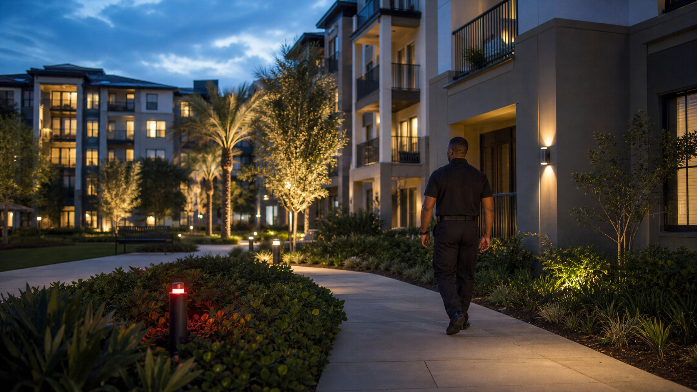
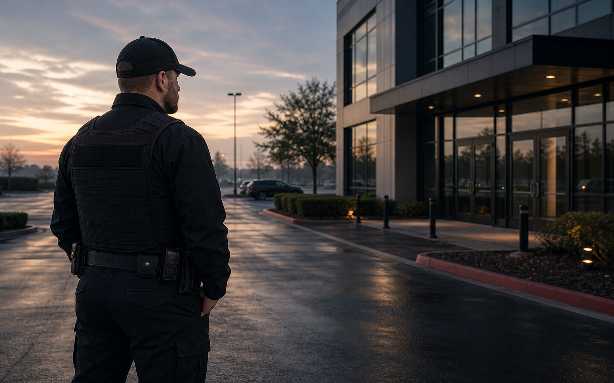

Apartment Security
Resident-friendly security presence, mobile patrols, and client-visible accountability for apartment communities.
Manned GuardingSecurity ConsultingEvent SecurityMobile PatrolsAlarm ResponseFire Watch ServicesLoss PreventionEmergency PlanningSpecialized SecurityCommunity SecurityEducational Programs
Built for property managers who need visibility without intimidation.
Highline targets apartments and residential communities with a modern trust-focused approach: professional officers, uniform flexibility, patrol documentation, GPS movement visibility, and communication that helps managers stay informed.
The result is a security presence that supports resident confidence, protects property, and gives management a more accountable way to evaluate coverage.
Request Apartment SecurityApartment Security Priorities
- Visible guard presence
- Mobile patrols and random checks
- Real-time client communication
- GPS tracking and portal reporting


Apartment Communities
Security that property managers can explain to residents and owners.
Apartment security has to balance visibility, resident comfort, parking areas, amenities, gates, package areas, noise complaints, trespass concerns, and after-hours activity. The strongest programs are not built around looking aggressive; they are built around consistency and communication.
Highline's apartment page should speak to the way managers actually judge coverage: Did the officer show up professionally? Were the right areas checked? Were incidents documented? Could management see movement or receive updates when something changed?
For Jacksonville and nearby communities, that can mean patrols around multifamily parking lots, common-area checks, gate or access-point support, courtesy presence during high-activity hours, and clear reporting that gives ownership a better view of what is happening on site.
What apartment managers should define before coverage starts.
The stronger the site instructions, the easier it is for security to support residents without overstepping the property culture.
Priority areas
Identify gates, parking lots, mailrooms, package rooms, amenities, pools, stairwells, vacant units, leasing office areas, and any locations that repeatedly generate complaints or incident reports.
Resident experience
Apartment security should look approachable and professional. Highline can align uniform tone, patrol timing, and communication expectations with the way the property wants residents and visitors to feel.
Management reporting
Managers need clear notes, not vague reassurance. GPS visibility, patrol documentation, and timely updates can help ownership understand whether the coverage is producing useful information.
Escalation rules
Before the post begins, define who is contacted for noise complaints, trespass concerns, property damage, suspicious activity, maintenance issues, and law enforcement coordination.
Next Step
Need apartment security residents can live with?
Share the property type, location, schedule, and concerns. Highline can respond with a practical conversation about guards, patrols, fire watch, event coverage, or a custom plan.